Los Kwamis
Son seres mágicos antiguos nacidos de conceptos abstractos universales. Cada uno está ligado a un Miraculous específico y otorga poderes especiales a su portador.
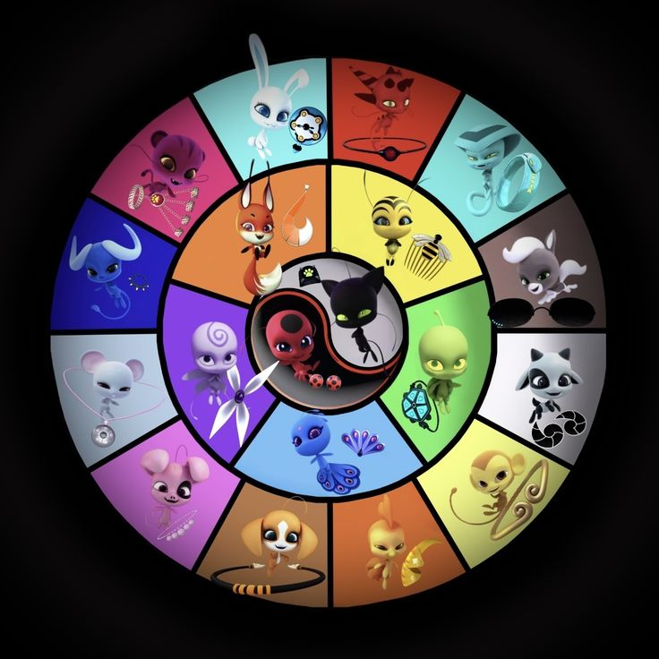
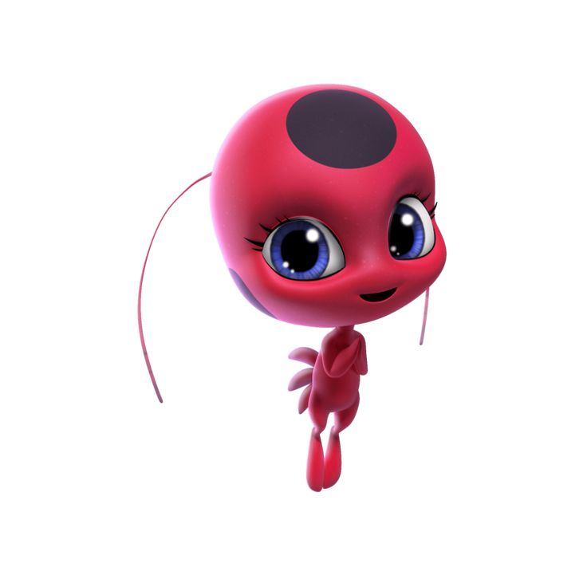
Tikki
| Dato | Información |
|---|---|
| Miraculous | Aretes de Ladybug |
| Concepto | Creación |
| Portadora principal | Marinette Dupain-Cheng |
| Color | Rojo con puntos negros |
| Comida favorita | Galletas |
| Frase | “Spots on!” |
Personalidad
- Dulce
- Inteligente
- Responsable
- Protectora
- Optimista
Poderes
- Lucky Charm
- Restauración mágica
- Purificación
Curiosidades
- Es uno de los kwamis más antiguos.
- Representa la creación del universo.
- Tiene una relación opuesta con Plagg.
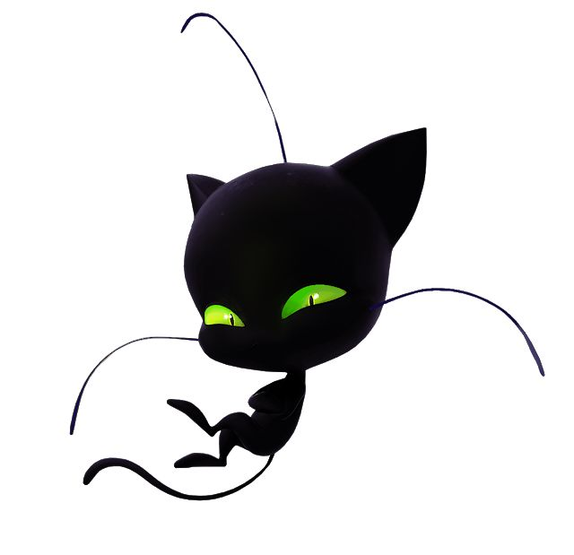
Plagg
| Dato | Información |
|---|---|
| Miraculous | Anillo del Gato Negro |
| Concepto | Destrucción |
| Portadora principal | Adrien Agreste |
| Color | Negro |
| Comida favorita | Camembert |
| Frase | “Claws out!” |
Personalidad
- Perezoso
- Sarcástico
- Divertido
- Rebelde
Poderes
- Cataclysm
- Destrucción absoluta
Curiosidades
- Se menciona que destruyó accidentalmente cosas históricas importantes.
- Su poder es considerado extremadamente peligroso.
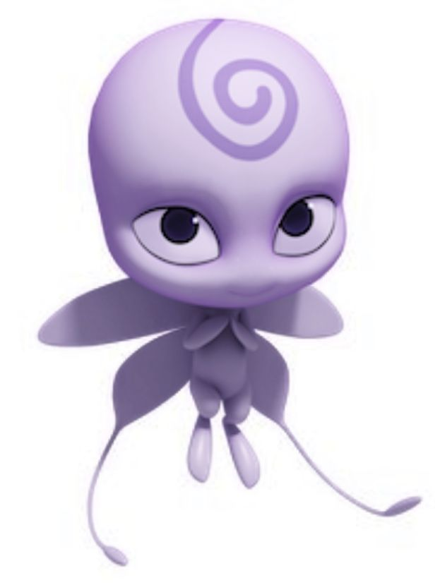
Nooroo
| Dato | Información |
|---|---|
| Miraculous | Broche de la mariposa |
| Concepto | Transmisión |
| Portadora principal | Gabriel Agreste |
| Color | Morado |
| Comida favorita | No muy especificada |
| Poder | Akumatización |
Personalidad
- Tímido
- Educado
- Noble
- Pacífico
Función
- Permite transmitir poderes a otras personas mediante akumas.
Curiosidades
- Gabriel lo obligaba a obedecer.
- Es uno de los kwamis más sufridos de la serie.
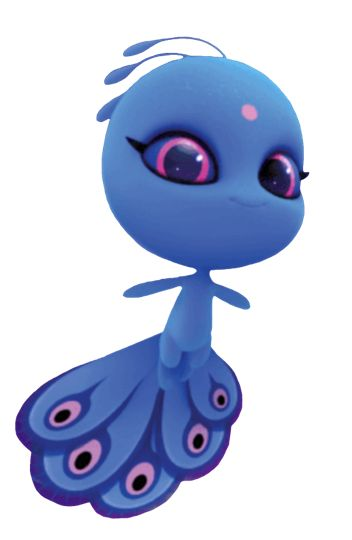
Duusu
| Dato | Información |
|---|---|
| Miraculous | Broche del pavo real |
| Concepto | Emoción |
| Portadores | Nathalie, Félix |
| Color | Azul |
| Poder | Crear sentimonstruos |
Personalidad
- Emocional
- Sensible
- Dramática
Curiosidades
- El Miraculous estaba dañado durante mucho tiempo.
- Su poder crea seres basados en emociones.
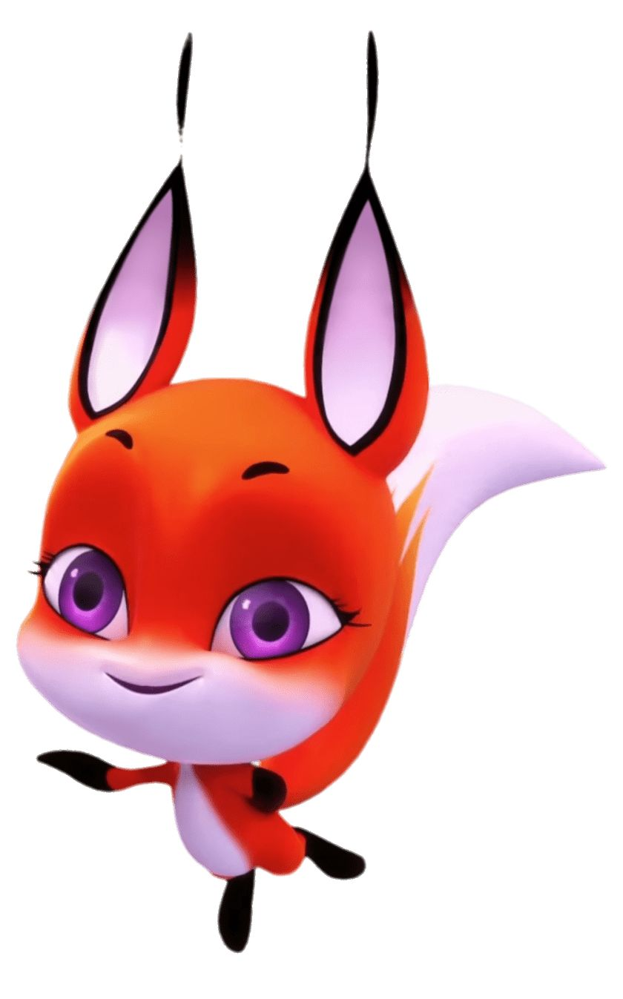
Trixx
| Dato | Información |
|---|---|
| Miraculous | Collar del zorro |
| Concepto | Ilusión |
| Portadora | Alya Césaire |
| Color | Naranja |
Poder
- Mirage
Personalidad
- Astuto
- Bromista
- Inteligente
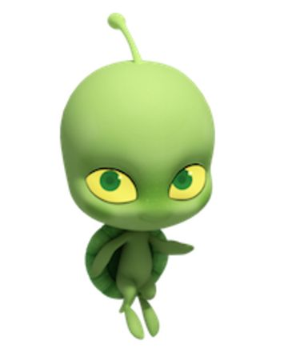
Wayzz
| Dato | Información |
|---|---|
| Miraculous | Brazalete de tortuga |
| Concepto | Protección |
| Portadores | Maestro-Fu, Nino Lahiffe |
Poder
- Shell-ter
Personalidad
- Sabio
- Calmado
- Paciente
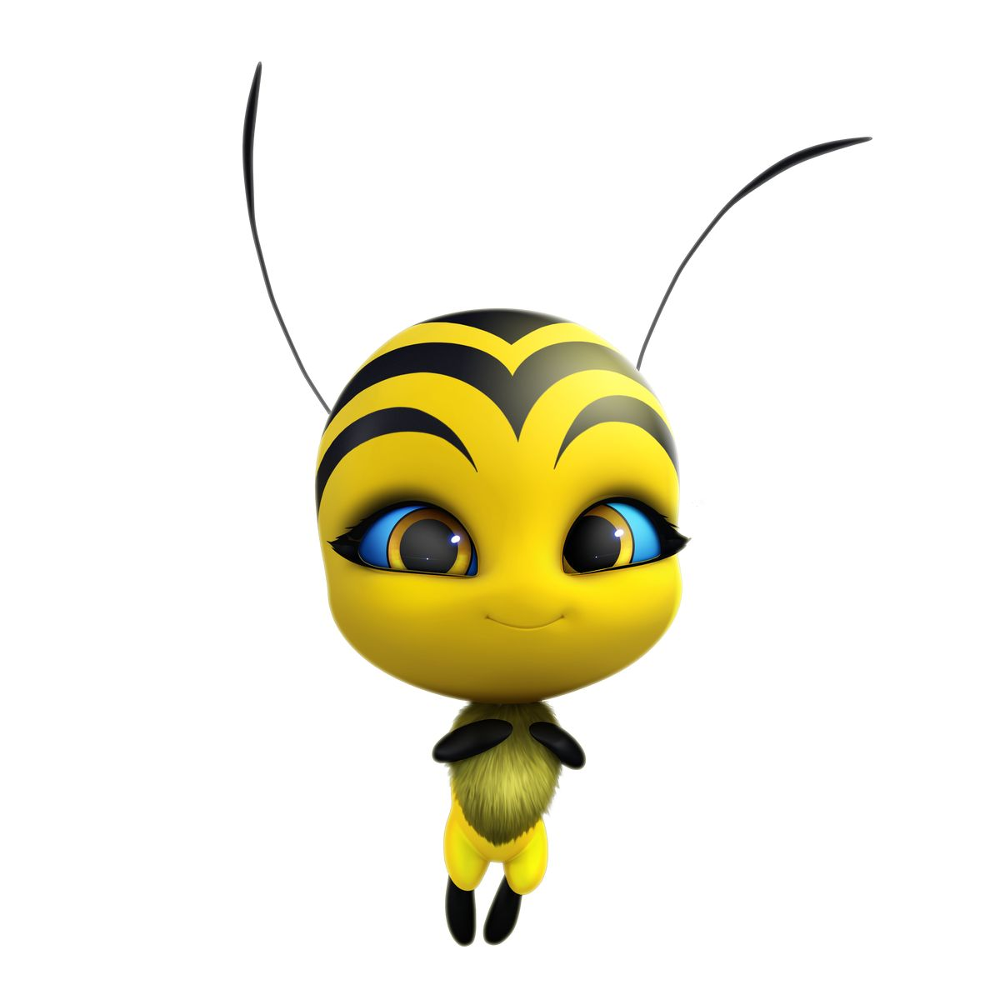
Pollen
| Dato | Información |
|---|---|
| Miraculous | Peineta de abeja |
| Concepto | Acción |
| Portadoras | Chloé y Zoé |
Poder
- Venom
Personalidad
- Formal
- Elegante
- Educada
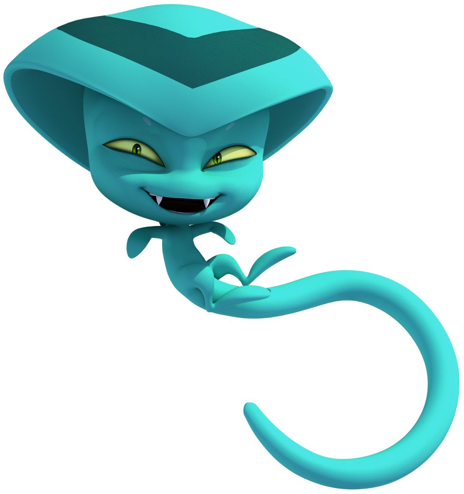
Sass
| Dato | Información |
|---|---|
| Miraculous | Pulsera de serpiente |
| Concepto | Intuición |
| Portador | Luka Couffaine |
Poder
- Second Chance
Curiosidades
- Puede reiniciar el tiempo.
- Es uno de los kwamis más sabios.
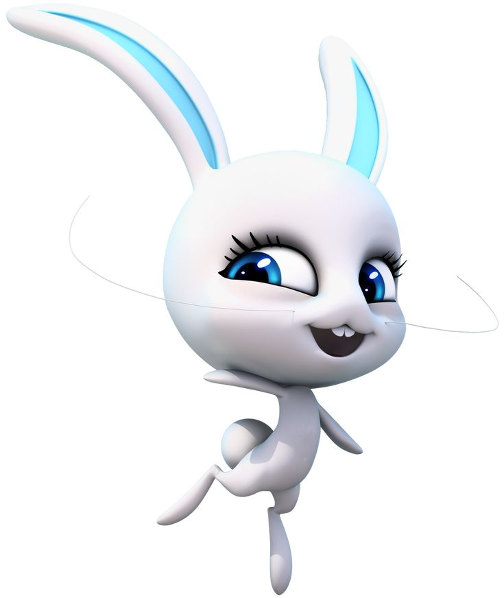
Fluff
| Dato | Información |
|---|---|
| Miraculous | Reloj de conejo |
| Concepto | Evolución |
| Portadora | Alix |
Poder
- Burrow
Función
- Permite viajar por el tiempo.
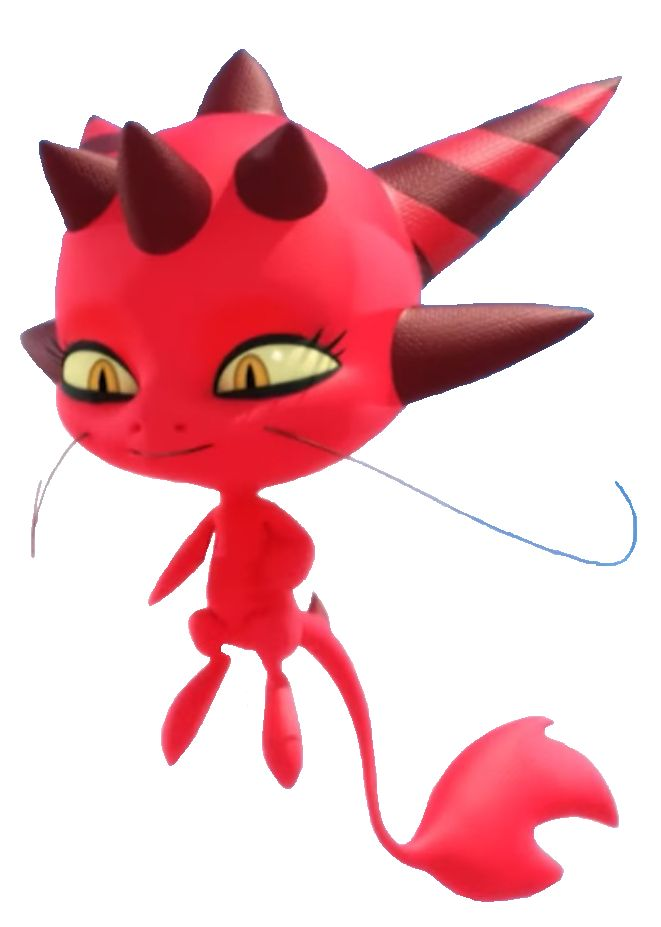
Longg
| Dato | Información |
|---|---|
| Miraculous | Collar de dragón |
| Concepto | Perfección |
| Portadora | Kagami |
Poderes
- Agua
- Aire
- Relámpago
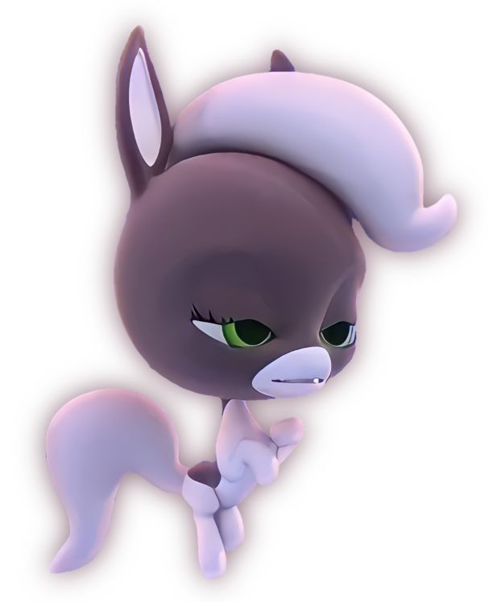
Kaalki
| Dato | Información |
|---|---|
| Miraculous | Lentes de caballo |
| Concepto | Migración |
| Portador | Max |
Poder
- Voyage
Función
- Abre portales dimensionales.
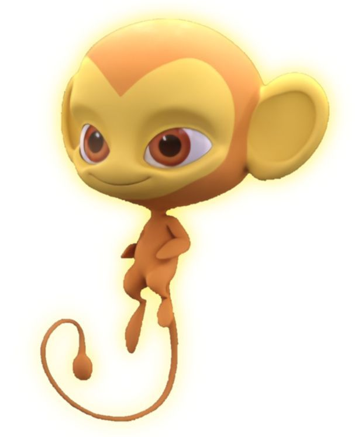
Xuppu
| Dato | Información |
|---|---|
| Miraculous | Diadema de mono |
| Concepto | Derisión |
| Portador | Kim |
Poder
- Uproar
Personalidad
- Travieso
- Energético
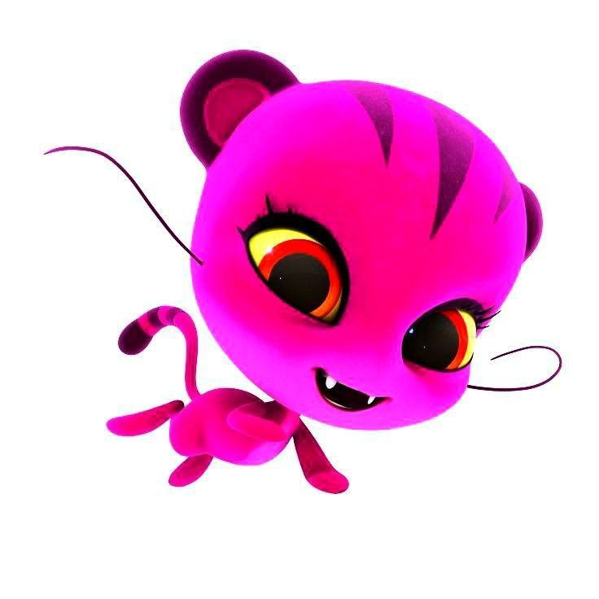
Roaar
| Dato | Información |
|---|---|
| Miraculous | Brazalete de tigre |
| Concepto | Exaltación |
| Portadora | Juleka |
Poder
- Clout
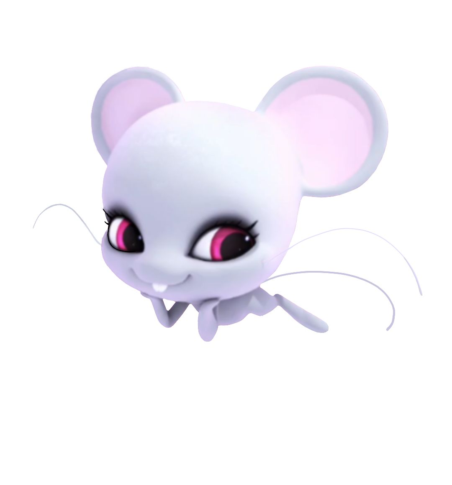
Mullo
| Dato | Información |
|---|---|
| Miraculous | Collar de ratón |
| Concepto | Multiplicación |
| Portadora | Mylène |
Poder
- Multitude
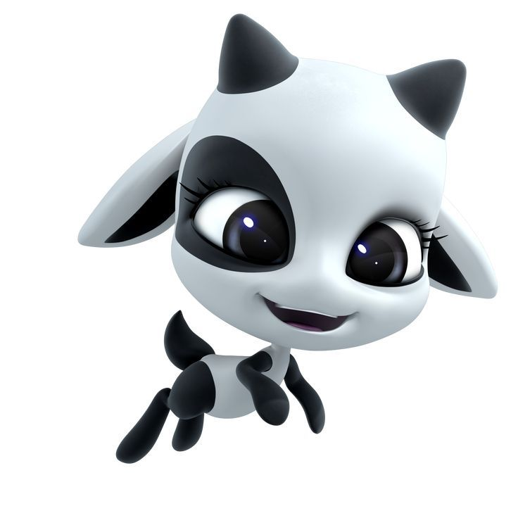
Ziggy
| Dato | Información |
|---|---|
| Miraculous | Broche de cabra |
| Concepto | Pasión |
| Portador | Nathaniel |
Poder
- Genesis
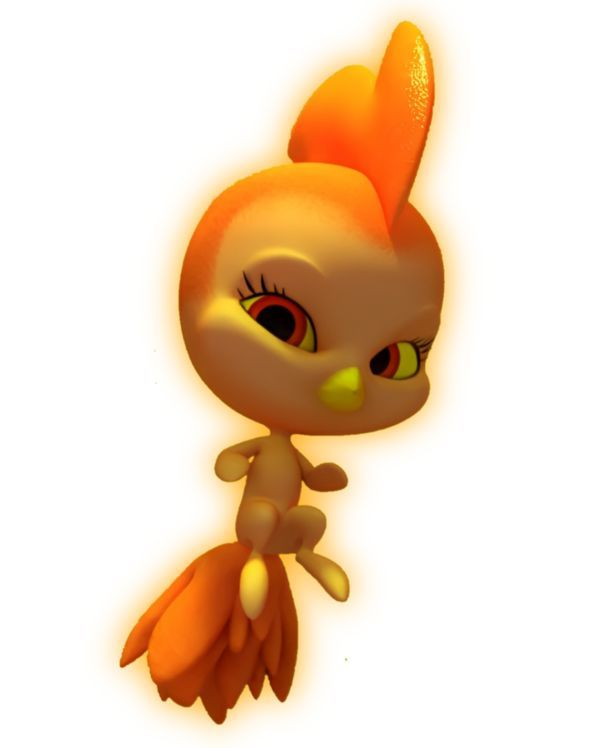
Orikko
| Dato | Información |
|---|---|
| Miraculous | Anillo de gallo |
| Concepto | Pretensión |
| Portador | Marc |
Poder
- Sublimación
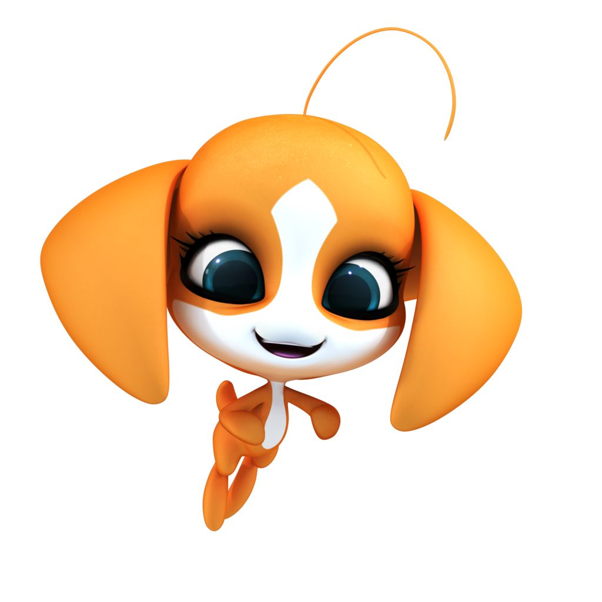
Barkk
| Dato | Información |
|---|---|
| Miraculous | Collar de perro |
| Concepto | Adoración |
| Portadora | Sabrina |
Poder
- Fetch
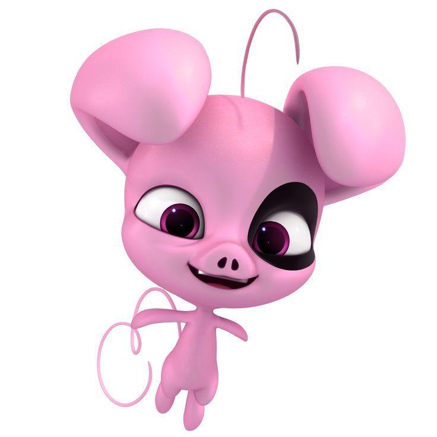
Daizzi
| Dato | Información |
|---|---|
| Miraculous | Tobillera de cerdo |
| Concepto | Jubilo |
| Portadora | Rose |
Poder
- Gift
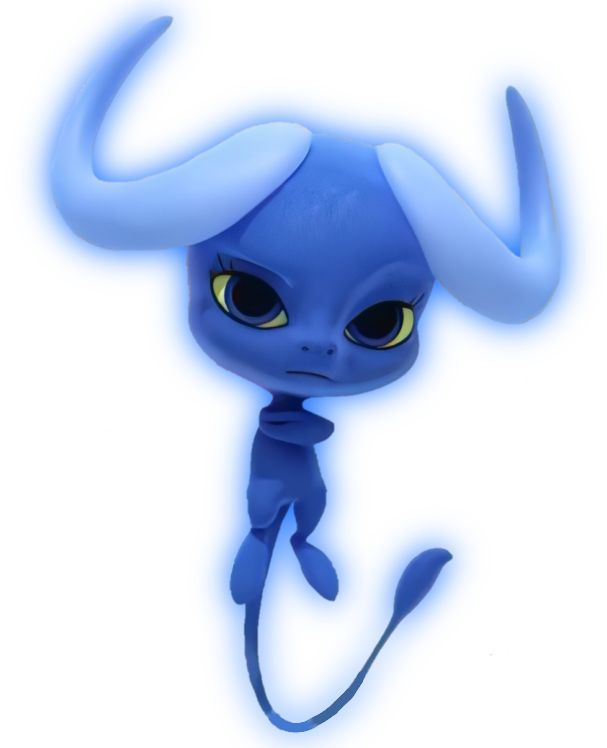
Stompp
| Dato | Información |
|---|---|
| Miraculous | Nariguera de buey |
| Concepto | Determinación |
| Portador | Ivan |
Poder
- Resistance